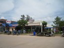

Resor · 2010-10-21 @ 10:32:22 Allmänt Permalink
Koh Lanta :-)
Airbus 330 till KL, fint stort plan, kort mellanlandning där jag köper en vodka och en Bailys och sen vidare med en liten B737 till Phuket.
KL är en sån där flygplats där man ser konstruktionen, det är fint! I säkerhetskontrollen ber en kvinna i uniform med slöja mig öppna packningen och vi tittar på lite dykutrustning.
Hon påminner mig igen om den där studentmössan på slöjan, för hon har ju uniformsmössa. Och jag tycker det ser rätt snyggt ut.
Det är få på planet och jag sträcker ut mig över en rad och tittar på den vackra utsikten! "Kaotisk molnhimmel" är nog termen för hur det ser ut. Svår turbulens! Och jag undrar var tyfonen "Migo" är och vart den är på väg.
---
Thailand, Phuket. :-)
Tullen ser nåt i röntgen. Åt sidan. Packa upp. 2 flaskor? Eee... maybe, Yes.. why?
Mannen förklarar mycket vänligt Thailands regler för införsel, som är 1 flaska, men låter mig passera :-)
Jaq går direkt till en reseagent och styr alltihop på en gång.
Transfer till hotell i Kata, hotellet, pick up till båten, båt till Lanta via Phi phi. Totalt 2.000 TBH (ca 500kr) känns ok.
Bakluckan öppnar sig ett par gånger på minibussen och packning ramlar ut. Min ligger tack o lov inte där. Efter resan saknas en väska för nån..
"Outdoor Inn", fyndigt kanske. Varmvatten och AC! Jag går en kvällssväng.
Antingen är det mycket renare nu eller så minns jag fel, eller så är mina normer förskjutna av Bali. Men det ÄR rent och fint!! Inga sophögar. Jag orienterar mig och tittar förbi på Oceanic dykskola där jag gick IDC -01.
Det är speciellt det där med alla flickbarer, alla som ropar och vill ha in en. Speciellt på så sätt att det inte var så i Bangkok, och inte i Saladan på Lanta. Hittar ingen karaoke och går hem och sover.
Skönt att vara i Thailand igen.
Resan går utan missöden, båten till Lanta kränger hårt, undrar om rodret är glappt. Men det är grova dyningar snett in akter om tvärs och det är ju jobbigt.
På båten är det 10st rumsbokare, som låter mig var ifred när jag sagt att jag ska dit och jobba. De mutar in olika gäster på båten, men två tjejgrupper börjar prata med varandra, och en vill byta hotel. Då blir kundraggaren tokig, svär och skriker åt tjejen!
Pinsamt. Men andra gäster och de övriga "agenterna" säger åt honom. Bad for business.
Nu blir det svårt att blogga så detaljerat. Jag ska jobba här, det är mina kollegor som jag möter.
Men jag hyr moppe och ett rum med AC, varmvatten, tre sängar, kyl, nära. Mäklarhavsutsikt. Tyvärr verkar inte internet funka, men de har det i reklamen så det kan ju komma igång under säsongen.
Känns spännande! Och bra, och vackert.
Sa jag tre sängar?
KL är en sån där flygplats där man ser konstruktionen, det är fint! I säkerhetskontrollen ber en kvinna i uniform med slöja mig öppna packningen och vi tittar på lite dykutrustning.
Hon påminner mig igen om den där studentmössan på slöjan, för hon har ju uniformsmössa. Och jag tycker det ser rätt snyggt ut.
Det är få på planet och jag sträcker ut mig över en rad och tittar på den vackra utsikten! "Kaotisk molnhimmel" är nog termen för hur det ser ut. Svår turbulens! Och jag undrar var tyfonen "Migo" är och vart den är på väg.
---
Thailand, Phuket. :-)
Tullen ser nåt i röntgen. Åt sidan. Packa upp. 2 flaskor? Eee... maybe, Yes.. why?
Mannen förklarar mycket vänligt Thailands regler för införsel, som är 1 flaska, men låter mig passera :-)
Jaq går direkt till en reseagent och styr alltihop på en gång.
Transfer till hotell i Kata, hotellet, pick up till båten, båt till Lanta via Phi phi. Totalt 2.000 TBH (ca 500kr) känns ok.
Bakluckan öppnar sig ett par gånger på minibussen och packning ramlar ut. Min ligger tack o lov inte där. Efter resan saknas en väska för nån..
"Outdoor Inn", fyndigt kanske. Varmvatten och AC! Jag går en kvällssväng.
Antingen är det mycket renare nu eller så minns jag fel, eller så är mina normer förskjutna av Bali. Men det ÄR rent och fint!! Inga sophögar. Jag orienterar mig och tittar förbi på Oceanic dykskola där jag gick IDC -01.
Det är speciellt det där med alla flickbarer, alla som ropar och vill ha in en. Speciellt på så sätt att det inte var så i Bangkok, och inte i Saladan på Lanta. Hittar ingen karaoke och går hem och sover.
Skönt att vara i Thailand igen.


Resan går utan missöden, båten till Lanta kränger hårt, undrar om rodret är glappt. Men det är grova dyningar snett in akter om tvärs och det är ju jobbigt.
På båten är det 10st rumsbokare, som låter mig var ifred när jag sagt att jag ska dit och jobba. De mutar in olika gäster på båten, men två tjejgrupper börjar prata med varandra, och en vill byta hotel. Då blir kundraggaren tokig, svär och skriker åt tjejen!
Pinsamt. Men andra gäster och de övriga "agenterna" säger åt honom. Bad for business.


Saladan… det är renare och större än sist. Den röda lervägen är betong nu. En kort vandring bort till Kon-Tiki, fint dykcenter!Nu blir det svårt att blogga så detaljerat. Jag ska jobba här, det är mina kollegor som jag möter.
Men jag hyr moppe och ett rum med AC, varmvatten, tre sängar, kyl, nära. Mäklarhavsutsikt. Tyvärr verkar inte internet funka, men de har det i reklamen så det kan ju komma igång under säsongen.


Känns spännande! Och bra, och vackert.
Sa jag tre sängar?